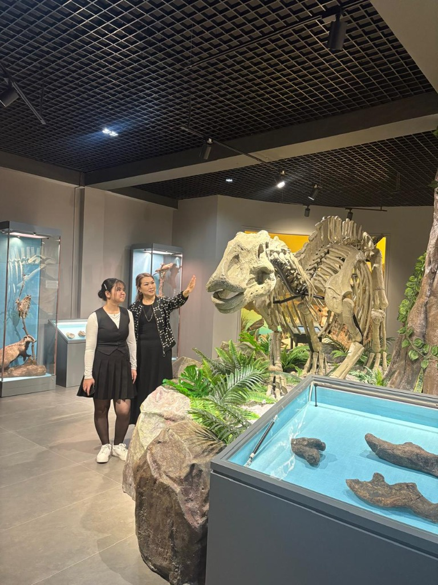
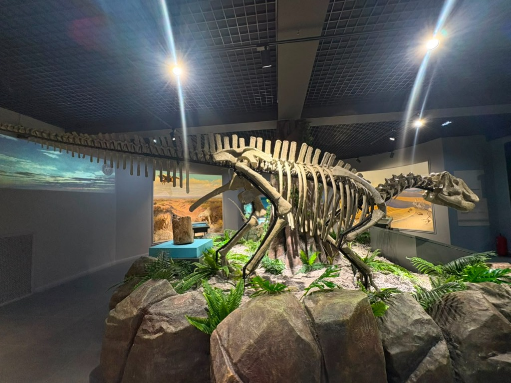
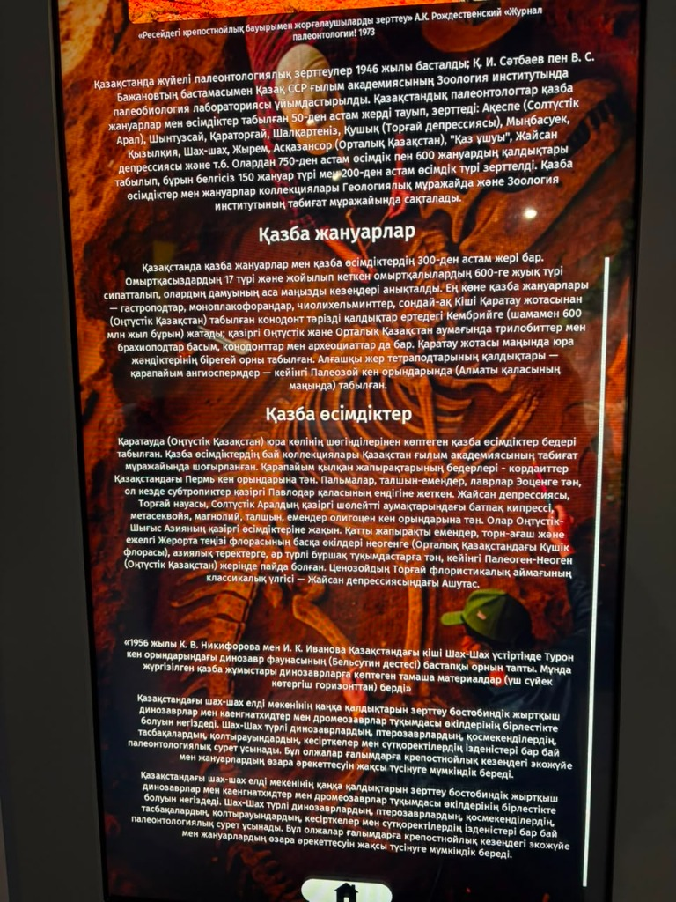
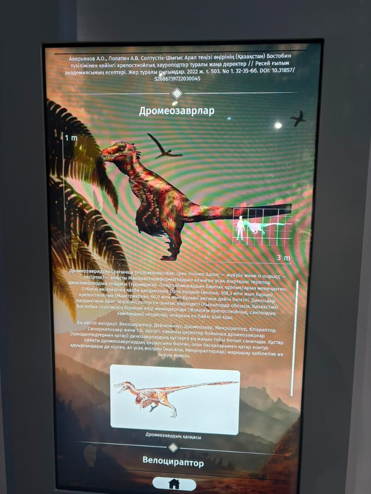
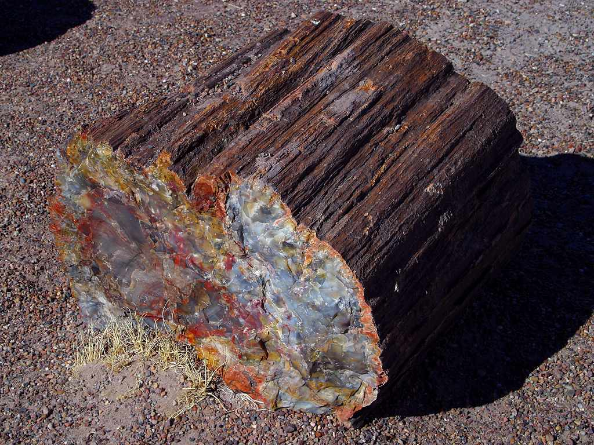
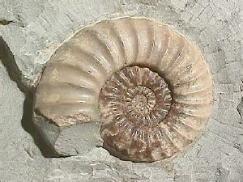
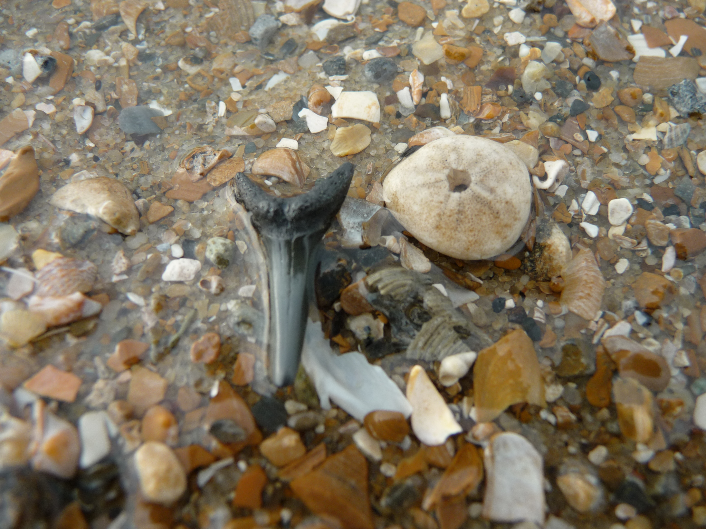

Геологиялық карталарды зерттеу, экспедициялық құрал-жабдықтарды (геологиялық балға, арнайы щеткалар, лупа, GPS навигатор, гипс) жинақтау.
Шөгінді жыныстардың табиғи ашылуларын (жарлар, сайлар, өзен жағалаулары) жаяу аралау. Сүйек немесе із сынықтарын визуалды мұқият іздеу.
Табылған объектінің нақты координаттарын жазу, масштабы бар сызғыш қойып суретке түсіру, далалық күнделікке геологиялық қабатты сипаттау.
Сүйекті зақымдамай айналасын аршу, сынбауы үшін гипс «жейдесіне» (монолит) салу, зертханаға немесе музейге қауіпсіз тасымалдау.
Оқушылар мен студенттерге арналған геологиялық-палеонтологиялық туристік бағыттың толық нұсқаулығы. Бұл жоба өңірдегі эко-туризмді дамытудың басты тірегі болып табылады.
Жобаның практикалық нәтижесі — мектеп қабырғасындағы шағын палеонтологиялық бұрыш. Ондағы экспонаттар виртуалды галереяда:

Аралозавр қаңқасы жанында

Аралозавр (Aralosaurus)

Қазба жануарлар мен өсімдіктер

Бостөбе дромеозаврлары



Бұл маршрут нақты палеонтологиялық ескерткішке рұқсатсыз қазба жүргізуді міндеттемейді. Музей экспозициясы, рұқсат етілген табиғи ашылым және ғылыми әдебиет үштағаны мектеп жобасы үшін қауіпсіз әрі жеткілікті база бола алады.
| Кезең | Нысан / Әрекет | Негізгі сұрақ | Күтілетін нәтиже |
|---|---|---|---|
| 1-кезең | Облыстық тарихи-өлкетану музейі | Қандай палеонтологиялық экспонаттар мен тарихи деректер бар? | Терминдер мен эталонды үлгілерді алдын ала тану, ғылыми база құру |
| 2-кезең | Қауіпсіз табиғи ашылым / Жыныс кесіндісі | Шөгінді қабаттар қалай орналасқан, түсі мен құрамы қандай? | Литологиялық сипаттама, стратиграфиялық бақылау |
| 3-кезең | Фотофиксация және құжаттау | Қандай құрылым/із байқалады? (Масштабты сызғышпен) | Ғылыми фото-каталог, координаттық байланыстыру |
| 4-кезең | Картографиялық белгілеу | Нүктелердің кеңістіктік және топографиялық байланысы қандай? | Қарапайым маршруттық ГАЖ/карта схемасы |
| 5-кезең | Салыстырмалы талдау | Табылған белгілер әдебиеттегі Жиркіндек/Бостөбе сипаттамасымен сәйкес пе? | Дәлелді ғылыми тұжырым және қорғау тезистері |
Экспозицияны 4 негізгі блокқа бөлу ұсынылады: «Уақыт таспасы», «Ежелгі теңіз бен өзендер», «Орманнан тасқа дейін» және «Сырдың алып жануарлары». Әр блокта нақты ғылыми факт, қарапайым түсіндірме және «Бұл деректі қайдан білеміз?» деген шағын айдар беріледі.
Басты педагогикалық қағида: «Тас — үнсіз зат емес, дұрыс сұрақ қойылса, өткен ортаның куәгері». Оқушы әр экспонатқа үш сұрақ қояды: Ол не? Қай қабаттан? Бізге ежелгі табиғи орта туралы не айтады?
Жүргізілген әдеби-талдамалық зерттеу Сыр бойының палеонтологиялық мұрасы біртекті емес, бірнеше орта мен дәуірді қамтитынын көрсетті. Түлікiлідегі флора жылы құрлықтық ортаны, сазды қабаттар теңіздік ықпалды, ал Бостөбе фаунасы өзен-жайылмалық кешенді дәлелдейді. «Сыр бойы түгел теңіз болған» немесе «тек динозаврлар мекендеген» деген қарапайым пікірлер ғылыми тұрғыдан жеткіліксіз.
Оқушыларды «зат жинаушыдан» жүйелі дерек жинаушы ғылыми ізденушіге айналдыратын құрал